In this assignment, I implemented a path tracer that shoots rays from the camera through each pixel and tests them against triangle and sphere primitives. I added BVH so large meshes are manageable and direct lighting, global illumination with Russian roulette to terminate rays, and adaptive sampling so noisier pixels can use more samples. It was interesting seeing how each part built upon the previous. We needed things to intersect correctly to render shapes, then sampling correctly and efficiently to make the image more believably.
In this part I generate camera rays by mapping each pixel through the camera transform to get a rays origin and direction in world space. For spheres, we need to solve the ray–sphere quadratic and take the smallest positive \(t\). For triangles, I implemented Möller–Trumbore ray–triangle test, which sets up the ray \(\mathbf{r}(t) = \mathbf{o} + t\mathbf{d}\) and the triangle edges and solve for barycentric coordinates \((u, v)\) and \(t\) and keep the closest valid hit and the normal so we can shade properly in later parts.
Here are a few small .dae scenes visualizing normals as RGB so I could check intersection without dealing with lighting yet.
|
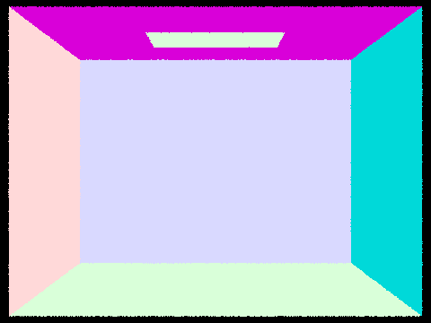 |
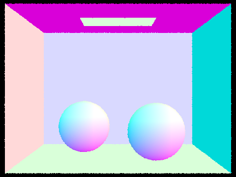 |
|
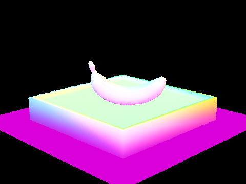 |
|
Debugging: I had to be careful about camera space vs world space when building ray directions, and about inverted normals on some meshes. For secondary rays, using a small offset along the ray (and EPS_F-style intersection bounds later) avoids self-hitting the same surface.
I then implemented a binary BVH by recursively splitting primitives inside an axis-aligned bounding box. For each node I computed an AABB of its primitives, picked a split axis, partitioned primitives, and recursed until its leaves held a small group of primitives. During the traversal, I test the ray against each node’s box first and only traverse into child nodes if the ray hits the box, so a whole subtree get skipped when possible.
Split heuristic: I split on the longest axis of the parent and used an average centroid split so the tree stayed as balanced as possible. This keeps traversals quicker on average compared to a worse split order.
Below are a few .dae scenes with normal shading. These need the BVH to finish in a reasonable amount of time at scale.
|
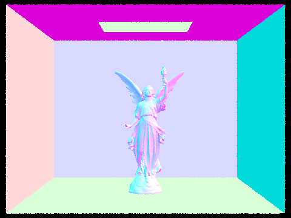 |
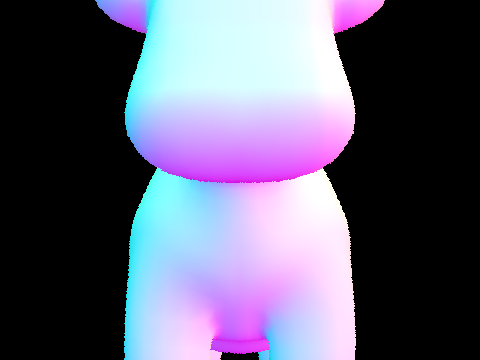 |
|
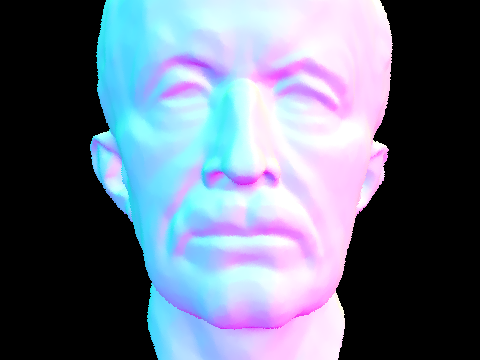 |
|
Timing comparison (same resolution and settings):
| Scene | Without BVH | With BVH | Speedup |
|---|---|---|---|
| cow.dae | 2.4788 s | 0.0297 s | ~83× |
| maxplanck.dae | 28.7012 s | 0.0424 s | ~677× |
Without BVH acceleration, the tracer checks every single primitive for every ray, resulting in O(n) intersection complexity. On cow.dae this takes 2.4788 seconds, while the more complex maxplanck.dae which the logs said has 50,801 triangles takes 28.7012 seconds and produces 7,564 intersection tests per ray. With BVH acceleration, the scene is partitioned into a binary tree of bounding boxes, allowing rays to quickly discard entire subtrees that cannot be intersected. This reduces intersection tests to just 11.6 per ray on maxplanck and rendering in 0.0424 seconds. The cow drops to 0.0297 seconds, an 83× speedup. The improvement scales with scene complexity, so larger scenes with more primitives benefit more from O(log n) traversal compared to the naive O(n) approach.
I implemented two ways to estimate direct lighting at a hit. Uniform hemisphere sampling picks random directions on the cosine-weighted hemisphere and averages the incoming light. Light sampling samples points on the area light directly, which usually lowers variance when the light is small or far away because I am not relying on random hemisphere directions to hit a small emitter.
Below I compare hemisphere sampling vs light sampling on the bunny with an area light. Light sampling gives cleaner shadows and fewer specks in my renders.
|
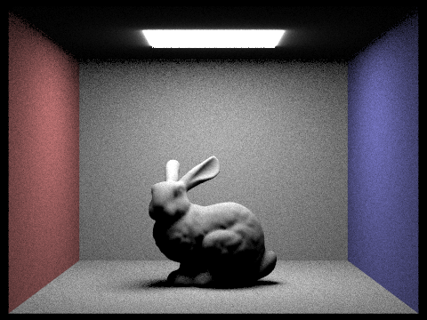 |
|
Light rays (\(-l\)): I fixed 1 sample per pixel and checked the number of light samples per shading point. More rays smooth out the penumbra but cost more, so 64 looks much smoother than 1.
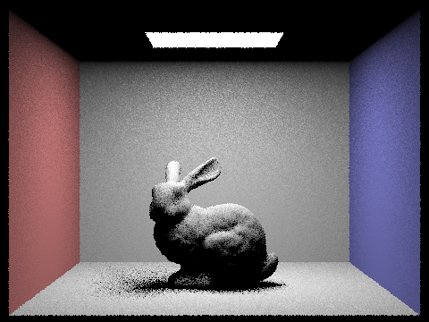 |
Hemisphere vs light sampling: Hemisphere sampling does not know where the light is, so if the light only covers a tiny solid angle a lot of samples miss it resulting in noisy shadows and bright speckles. Light sampling integrates over the light geometry on purpose, so shadow edges converge faster for the same number of samples. For scenes with area lights, light sampling will be better.
At each hit I add emission, evaluate direct lighting, then sample the BSDF and recurse onwards to gather indirect light. I cap the recursion depth with -m and use Russian roulette after a few bounces to stop paths in an unbiased way without always hitting the cap.
Global illumination (1024 spp): Full path-traced results:
|
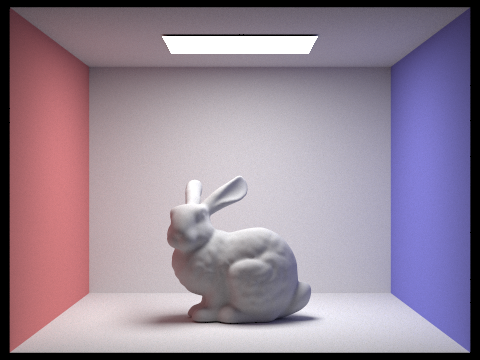 |
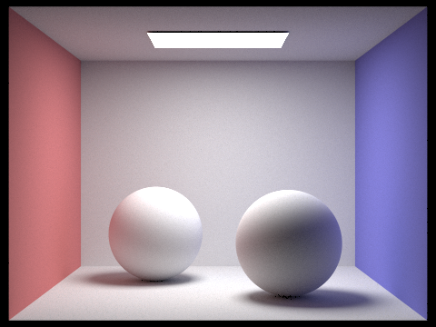 |
Direct vs indirect vs full: To view what is contributed directly and indirectly, I modified PathTracer::at_least_one_bounce_radiance to output direct only, indirect only, and the full global image. Same scene, 1024 spp.
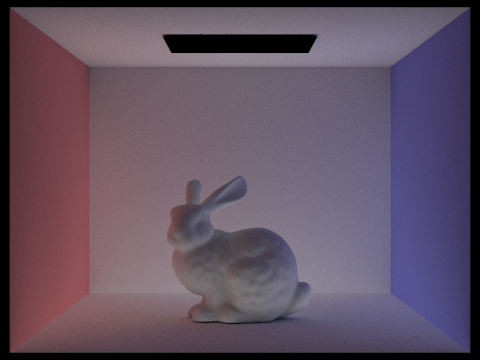 |
max_ray_depth in raytrace_pixel and decrement it on each bounce so the cap is actually reached.EPS_F so the same triangle isn't intersected twice.When isAccumBounces = false, each column shows only the radiance from bounce \(m\) (one application of the kernel \(K\) at a time on \(L_e\)). When isAccumBounces = true, each column adds up \(\sum_{i=0}^{m} K^i(L_e)\) up to that max depth. The false row uses bunny_unaccum_m*. The true row uses bunny_accum_m*.
| isAccumBounces | \(m=0\) | \(m=1\) | \(m=2\) | \(m=3\) | \(m=4\) | \(m=5\) |
|---|---|---|---|---|---|---|
| \(L_e\) | \(K(L_e)\) | \((K \circ K)(L_e)\) | \((K \circ K \circ K)(L_e)\) | \((K \circ K \circ K \circ K)(L_e)\) | \((K \circ K \circ K \circ K \circ K)(L_e)\) | |
| false | 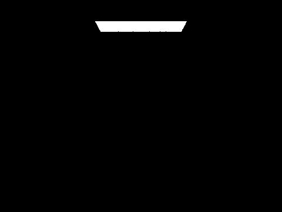 |
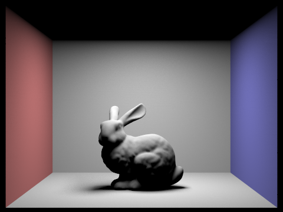 |
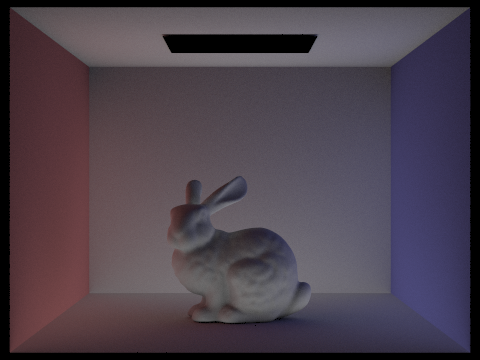 |
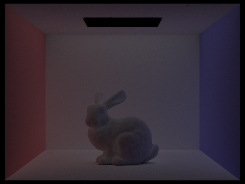 |
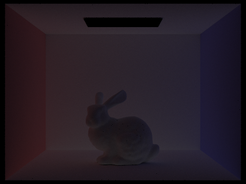 |
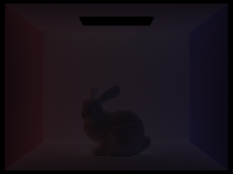 |
| \(\sum_{i=0}^{0} K^i(L_e)\) | \(\sum_{i=0}^{1} K^i(L_e)\) | \(\sum_{i=0}^{2} K^i(L_e)\) | \(\sum_{i=0}^{3} K^i(L_e)\) | \(\sum_{i=0}^{4} K^i(L_e)\) | \(\sum_{i=0}^{5} K^i(L_e)\) | |
| true | 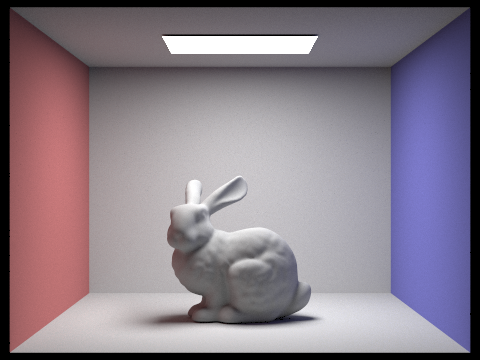 |
2nd vs 3rd bounce: By the second bounce you start to see color from the floor and walls bleed onto the bunny. The third bounce fills in tighter regions and places where light has to bounce a few times to reach. Rasterization with only direct lighting does not get this effect naturally.
Here I sweep max_ray_depth with Russian roulette on. A bigger cap lets longer paths through; at \(m=100\) the cap is huge so the random terminations are really what ends paths.
| \(m=0\) | \(m=1\) | \(m=2\) | \(m=3\) | \(m=4\) | \(m=100\) |
|---|---|---|---|---|---|
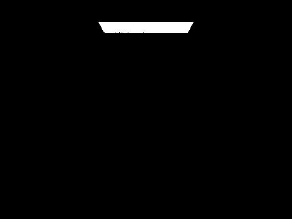 |
I swept samples per pixel with 4 light rays. Noise drops as the samples go up. At 1024 it looks basically clean.
| \(-s = 1\) | \(-s = 2\) | \(-s = 4\) | \(-s = 8\) | \(-s = 16\) | \(-s = 64\) | \(-s = 1024\) |
|---|---|---|---|---|---|---|
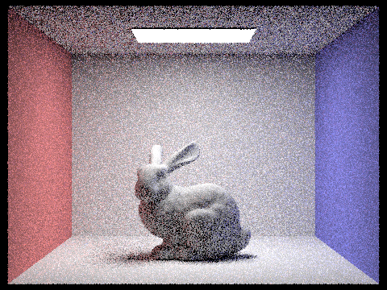 |
Adaptive sampling: Instead of always taking the same number of samples everywhere, I batch samples per pixel and check whether the running average has converged (using variance checks from the spec). Noisy pixels keep sampling up to a maximum and easy pixels stop early, so rendering time can be saved without giving up quality.
Implementation: After every batch of \(N\) samples I update the mean and variance for the pixel. If it passes the threshold I mark the pixel done, or else I take another batch until I hit the cap. I also output a sample-count heatmap image to can see where the renderer spent more samples, which is usually around edges and details.
Below are two scenes with at least 2048 max samples per pixel, 1 light ray, and max depth \(\geq 5\).
|
|
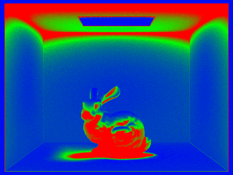 |
|
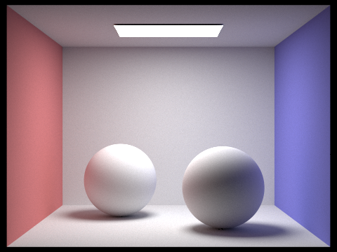 |
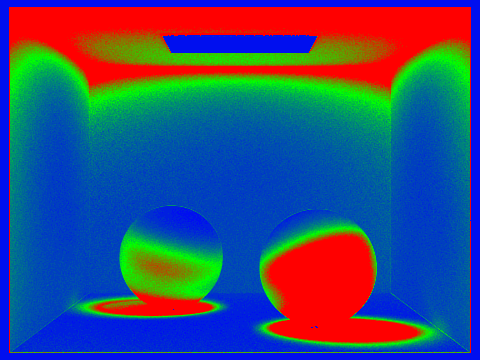 |
I replaced the uniform random pixel sampler with a jittered sampler. Instead of picking completely random points in a pixel, I divide the pixel into an \(\lceil\sqrt{n}\rceil \times \lceil\sqrt{n}\rceil\) grid and place exactly one randomly jittered sample inside each pixel cell. This ensures uniform coverage of the pixel area as no two samples fall in the same cell while still being randomized to avoid aliasing.
Implementation: In raytrace_pixel I replaced the flat loop with a nested si / sj loop over the grid. The sample offset is computed as ((si + rand) / sqrt_n, (sj + rand) / sqrt_n).
Below I compare jittered vs random sampling at low sample counts where the difference is most visible. Both use the same total sample budget.
| \(-s = 1\) random | \(-s = 1\) jittered |
|---|---|
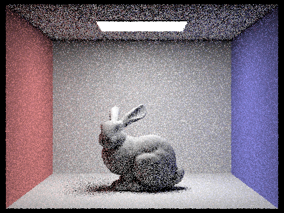 |
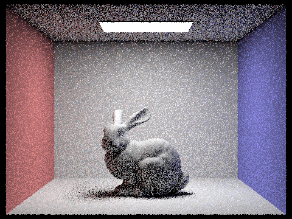 |
| \(-s = 4\) random | \(-s = 4\) jittered |
| \(-s = 16\) random | \(-s = 16\) jittered |
The visual difference between jittered and random sampling is subtle in path traced Cornell Box scenes which is likely expected. The dominant source of noise in path tracing is variance from random light bounce directions and shadow rays, not necessarily pixel sampling patterns. Jittered sampling's main advantage is reducing aliasing from undersampling geometry edges and high-frequency detail, which is less apparent in diffuse scenes. In theory jittered sampling will be better in the worst case as random sampling can cluster multiple samples in the same region by chance. In scenes with fine detail or sharp boundaries, this coverage would produce more visible improvements. You can see a bit of this in the \(s=16\) scene around the ceiling box edges.